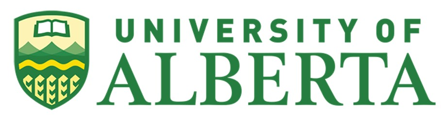
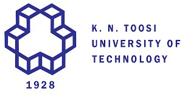
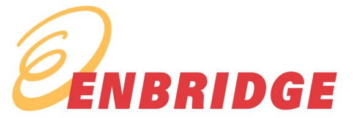
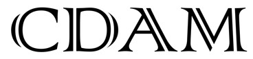
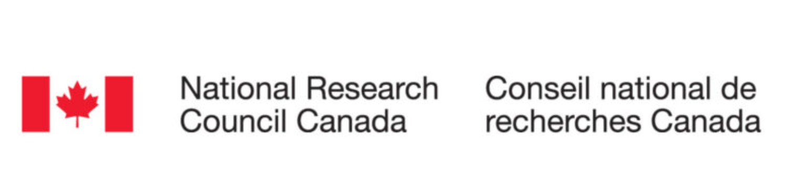
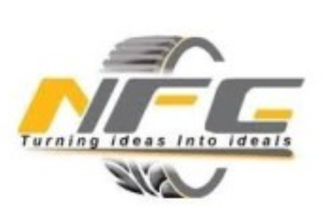

Professional Background
Experience
Research and professional work on energy infrastructure, structural integrity, advanced manufacturing, and applied machine learning.
// Research Experience

Graduate Research Assistant
- Full-scale FEA modelling of spiral-welded pipelines under mixed-mode loading conditions.
- XFEM modelling for fracture toughness specimens to characterize crack initiation and propagation.
- Experimental fracture toughness testing and fatigue life analysis per ASTM standards.
- Fatigue assessment using Fe-safe and Abaqus for pipeline integrity evaluation.
- Machine learning and data processing applied to failure root-cause studies.
- Active collaboration with Enbridge, DNV, TC Energy, and AltaML on industry-facing research.

Undergraduate Research Assistant
- Investigated mechanical behaviour of lattice and metamaterial structures under quasi-static and dynamic loading.
- Researched polymer additive manufacturing and fibre-reinforced composite structures.
- Performed damage-based FEA using Abaqus to model progressive failure in structural components.
- Designed complex geometries for simulation using Grasshopper and Rhino.
// Teaching Experience
Machine Learning for Additive Manufacturing
Mechanical Design II
Design of Machine Elements I & II
Introduction to Finite Element Method
// Work Experience

Risk Analysis & Diagnostics Engineer
- Develop physics-based and data-driven models for risk assessment and integrity management of pipeline systems and energy facilities.
- Evaluate complex failure mechanisms and identify critical risk scenarios to support engineering decision-making and mitigation planning.
- Contribute to the analytical core of asset integrity programs for large-scale energy infrastructure.

Stress Analyst / Mechanical Designer
- Performed fracture, fatigue, static, dynamic, and vibration FEA using Abaqus and ANSYS for pipeline system reliability.
- Conducted design verification and fitness-for-service evaluations per ASME Section XI and API-579.
- Delivered structural integrity solutions for major energy stakeholders including Enbridge, DNV, and TC Energy.
- Planned and executed mechanical, fracture, and vibration testing per ASTM standards.

Stress Analyst
- Conducted FEA to assess structural performance and safety under operational loading conditions.
- Performed defect and failure analysis to identify degradation mechanisms and support reliability assessments.
- Applied machine learning techniques for structural health monitoring (SHM) applications.
Mechanical Designer / FEA Analyst
- Analysed mechanical behaviour of 3D-printed components for automotive crashworthiness applications.
- Developed parametric structural models in NX for geometry-driven simulation and design optimization.
- Used LS-DYNA dynamic simulation results to guide crashbox design improvements.

Mechanical Designer (R&D / Manufacturing)
- Designed and optimized industrial machinery components using SolidWorks and AutoCAD.
- Applied DFM principles to improve production efficiency and component quality.
- Supported R&D activities through data analysis and design iteration.